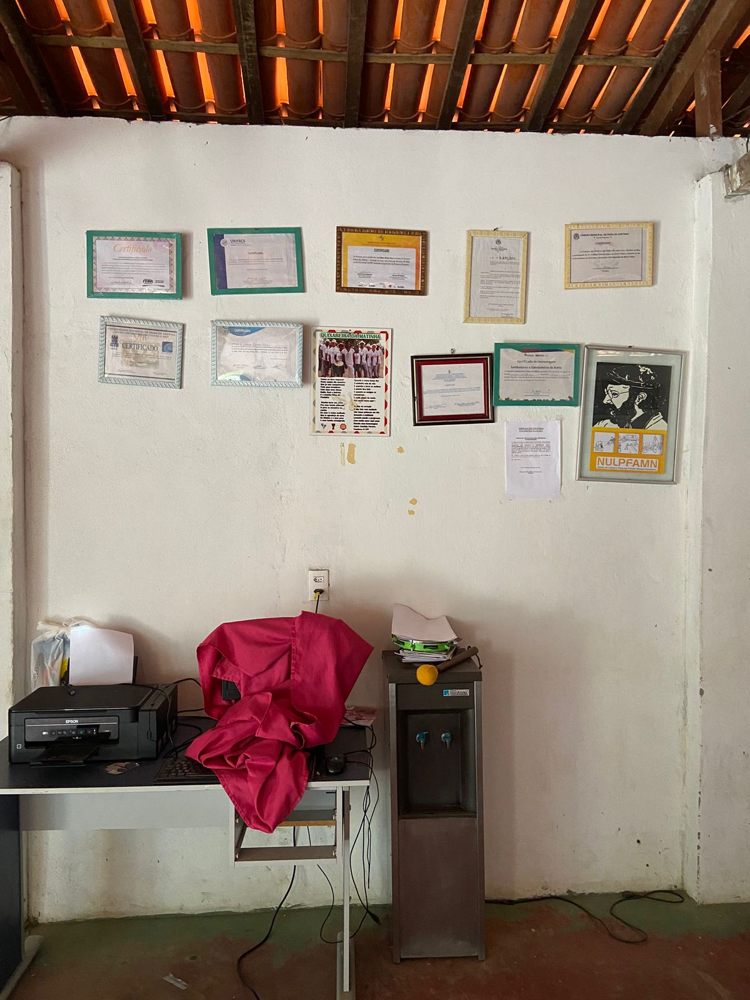
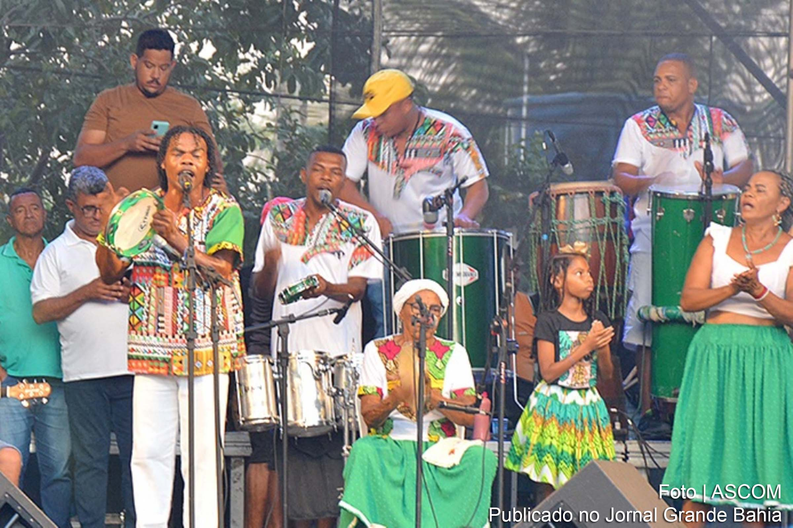

História do Grupo Quixabeira da Matinha
A história do grupo de samba de roda Quixabeira da Matinha está relacionada com a resistência dos negros escravizados e com a luta para manter e divulgar a cultura popular.
A Matinha dos Pretos é um núcleo de negros fugidos que se refugiaram em uma mata dentro de uma fazenda, como forma de resistência à escravidão.
O grupo Quixabeira da Matinha foi formado em 1989 por trabalhadores rurais da comunidade quilombola Matinha dos Pretos, em Feira de Santana, que aprenderam a cantar e tocar sem frequentar nenhuma escola de música.
O nome do grupo vem da Quixaba, uma planta resistente do interior que simboliza a luta e a persistência do grupo.
A canção "Quixabeira", criada pelos sambadores da Matinha, ganhou projeção nacional em 1996, quando foi gravada por Carlinhos Brown no disco Alfagamabetizado.
O samba de roda é considerado patrimônio oral e imaterial da humanidade pela UNESCO.
A Quixabeira da Matinha é um dos Pontos de Cultura do território de identidade Portal do Sertão. O grupo trabalha em parceria com a Associação Cultural Coleirinho da Bahia para valorizar a cultura popular e o samba de roda.